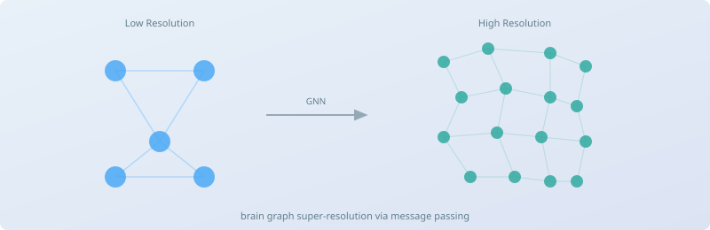

Graph neural network research with Imperial College London — super-resolving brain connectivity graphs using message-passing and fusion strategies.
Super-resolving low-resolution brain connectivity graphs into high-resolution representations using graph neural networks and message-passing architectures.
Brain imaging produces connectivity matrices at varying resolutions depending on acquisition protocol and atlas parcellation. This research develops graph-learning methods that predict fine-grained connectivity from coarse inputs, enabling richer downstream analysis without additional scanning. Lead co-author with Dr Islem Rekik, coordinating ~20 co-authors across experiments and reproducible pipelines.